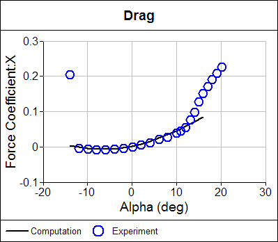

Why Use a Panel Method?
Panel methods can calculate the gas or liquid flow around complex 3D configurations, such as aircraft, with relative ease. However, that ease comes at a price: panel methods are incapable of modeling the viscous effects that are evident in all real-world flows. So why would an engineer use a panel method?
 Panel Method Wing-Body Calculation
Panel Method Wing-Body Calculation
Panel methods are ideal for concept design analysis due to their rapid turnaround time and relatively easy surface modeling, but this is countered by their inability to predict boundary layers and flow separation. The lack of viscosity modeling in a panel method leads to another limitation: they can’t model rotational flows such as that found in a cyclone. Panel methods can’t model supersonic flow (Mach number > 1) either. When you consider that the majority of fluid flows relevant to engineers are subsonic, the inability to model supersonic flows is a minor constraint compared to the lack of viscosity modeling.
Playing to a panel method’s strengths reveals a useful engineering tool. A panel method performs best when modeling fully-attached, high-Reynolds-number (> 105), subsonic (Mach number < 1) flow. Such conditions are found in abundance around streamlined shapes such as aircraft, cars, submarines and yachts. Not surprisingly, the aerospace industry was the first to develop and adopt panel methods, followed by racing-car designers and more recently racing-yacht designers.

Panel Method Airfoil Lift Calculations Compared to Experiment
Panel methods are adept at calculating the lift force and form drag force (also known as pressure drag) on a wing, wing-body and whole aircraft as long as viscous effects are negligible i.e., away from stall conditions. Form drag is a useful quantity to calculate, but without the skin-friction drag (which is dependent on viscous modeling) it doesn’t reflect the total drag. Total drag is the sum of the form drag and skin-friction drag. For airfoils, skin-friction is significant at low angles of attack and therefore panel methods shouldn’t be relied upon for drag prediction.
Panel Method Airfoil Form Drag Calculations Compared to Experiment
To predict lift and form drag, a panel method requires that a wake be shed from an airfoil’s trailing edge. Such wakes can be generated automatically once the trailing edge is identified. Without a wake, a panel method reverts to its pure inviscid mode and does not calculate lift or form drag.
 Panel Method Wake Behind an Airfoil
Panel Method Wake Behind an Airfoil
Aircraft commonly use high-lift multi-element airfoil configurations during take-off and landing. Multi-element airfoils are also used on Formula 1 racing cars as a compact method for generating downforce (lift force directed downwards). Panel methods can model such configurations relatively easily and accurately. Downforce for racing cars is the primary means by which they win races, so the lack of accurate drag prediction from a panel method is a minor inconvenience.
Panel Method High-Lift Multi-Element Airfoil Calculation
Panel methods were originally conceived for incompressible flow (Mach number < 0.3). However, by using compressible corrections we can extend the useful range of a panel method to high subsonic speeds (Mach number < 1). Panel methods can also model subsonic inlets and outlets relatively easily, such as engine intakes on aircraft and cooling inlets and outlets on cars.
Time-dependent motion of a fluid, such as that caused by rotating helicopter blades, is a difficult and time-consuming problem to simulate with a volume-based analysis technique. However, with a panel method such a simulation is relatively easy to accomplish.
High Reynolds-number, subsonic, internal flows such as those found inside wind tunnels are ideal for panel methods. But, why would anyone want to simulate a wind tunnel, which is itself a simulation? Experimental data produced in wind tunnels, say for an airfoil, are typically affected by the proximity of the wind-tunnel walls, the blockage effect of the model, and uncertainty in the absolute angle of attack. A panel method can simulate the wind tunnel and the model it contains and compare it with a tunnel-free model simulation. Thus, the difference in forces between the two panel method calculations can be applied as a correction to the wind tunnel experimental data to provide a better approximation of a tunnel-free experiment.
Hopefully this article has convinced you that panel methods are a valuable tool for engineers to consider when analyzing fully-attached, high-Reynolds-number, subsonic flows. If you are keen to try such a tool consider our affordable Panel Flow add-on for Caedium.
Feedback
Questions? Ideas? Problems?

Recent blog posts
- CFD Simulates Distant Past
- Background on the Caedium v6.0 Release
- Long-Necked Dinosaurs Succumb To CFD
- CFD Provides Insight Into Mystery Fossils
- Wind Turbine Design According to Insects
- Runners Discover Drafting
- Wind Tunnel and CFD Reveal Best Cycling Tuck
- Active Aerodynamics on the Lamborghini Huracán Performante
- Fluidic Logic
- Stonehenge Vortex Revealed as April Fools' Day Distortion Field
 Get our Blog feed
Get our Blog feed